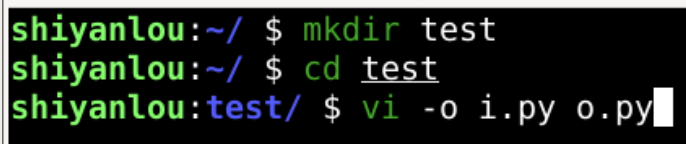
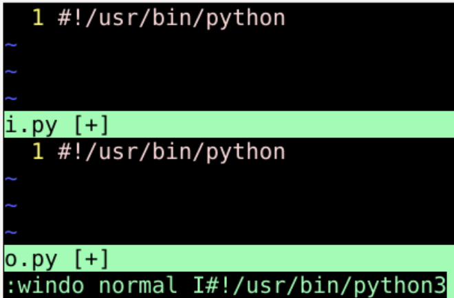
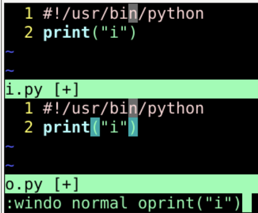
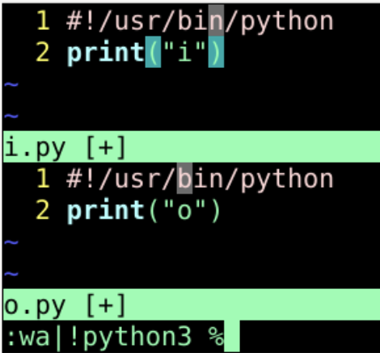
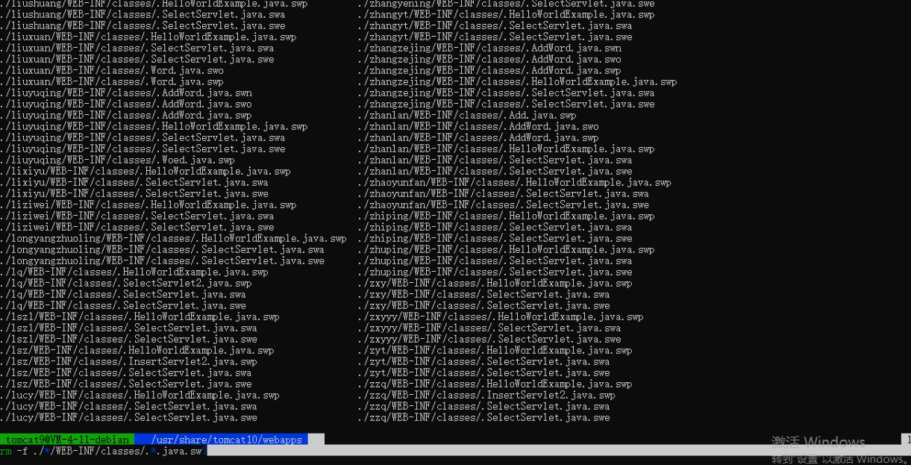

arguments listvim 打开的 参数列表buffer:arga filename添加 参数:argd filename来删除参数:args 查询参数列表:bd filename来删除缓存:e filename来打开缓存ls可以列出缓存列表terminal中配合find来找到文件vimsudo find / -mindepth 3 -maxdepth 4 -name passwd | xargs vivi -o i.py o.py
:windo normal I#!/usr/bin/python3#!/usr/bin/python3: 进入命令行模式windo 在每个窗口都执行命令normal I#!/usr/bin/python3 执行的命令是正常模式下 I#!/usr/bin/python3I 在行头插入文本#!/usr/bin/python3 插入的具体文本 
:windo normal oprint("i"): 进入命令行模式windo 在每个窗口都执行命令normal oprint("i") 执行的命令执行的命令是正常模式下 oprint("i")o 换行并插入文本print("i") 插入的具体文本
o.py 中输出的i 修改成 o
vi -o o1 o2 o3:windo normal I oeasywindo所有窗口都执行normal 进入普通模式I oeasy插入oeasy:windo normal oprint("i")windo所有窗口都执行normal 进入普通模式o 换行print("i") 输入 print("i"):windo normal "%pwindo所有窗口都执行normal 进入普通模式"%p 粘贴各自文件名:windo %s/oeasy/o2z/gwindo 所有窗口都进行%s/oeasy/o2z/g 把oeasy替换为o2z:wall 全部保存rangewindow编号:1,3windo normal Ioeasy|隔开各个命令:windo %s/oeasy/o2z/g｜ %s/o2z/o3z/g:windo set nolist nofoldcolumn | normal zn: windo set fileencoding=utf-8 | update自动更新windobuffer执行命令:bufdo %s/oeasy/o2z/gwindow 遍历每个bufferhidden隐藏 修改后的bufferautowrite 自动保存:ls、:buffers buffers列表buffers缓冲文件:bd1:bd o2z.txt buffer缓冲文件e .:b1
:argdo %s/oeasy/o2z/g:args *.c :argdo set ff=unix | update.c或.h文件，批量替换并更新:args *.[ch] :argdo %s/\<my_foo\>/My_Foo/ge | update:args :argd :arga:windo:bufdo:argdo{cmd}可以用｜按顺序增加update 自动更新:set autowrite 自动写入:set hidden 可以隐藏未保存 bufferwindow、buffers、arguments